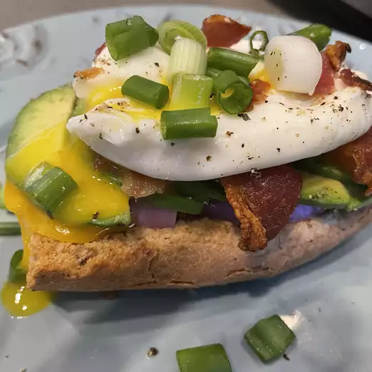

Toast

Avocado Toast with Crumbled Crispy Pancetta
Make this mouthwatering egg and avocado toast recipe the star of your next brunch.
Diced pancetta joins hearty rye bread and seasoned avocado to create the lusciously savory
toast of your dreams.
Ingredients
- 1 slice pancetta, diced
- 1 egg
- 1 slice prosciutto
- 1 slice rye bread, toasted
- 1/2 ripe avocado, diced, or to taste
- salt and ground black pepper to taste
Steps
- Place pancetta in a large skillet and cook over
medium-high heat, turning occasionally,
until evenly browned,about 5 minutes. Drain on a paper towel.
- Fill a large saucepan with 2 to 3 inches of water and bring to a boil. Reduce
the heat to medium-low and keep the water at a gentle simmer.
Crack egg into a small bowl then gently slip egg into the simmering water,
holding the bowl just above the surface of water. Cook until egg white is firm and the yolk
thickens, 2 1/2 to 3 minutes. Remove the egg from the water with a slotted spoon and
dab on a paper towel to remove excess water.
- Place prosciutto on the toast. Spread a generous layer of avocado on top;
season with salt and pepper. Add pancetta; top with the poached egg.